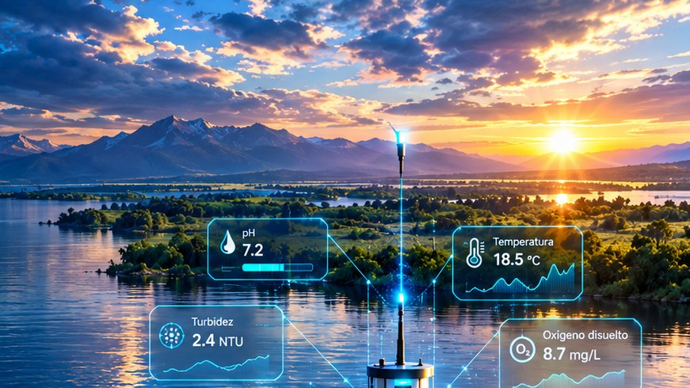

AquaVigía: monitoreo y predicción de la calidad del agua¶

Equipo 02 · Big Data · Escuela Profesional de Ingeniería de Sistemas · Universidad Peruana Unión, Juliaca · IX ciclo, 2026-2
| Integrantes | Celia Patricia Apaza Hilasaca · Jhenderson Aaron Machaca Mamani |
| Docente | Abel Ángel Sullón Macalupú |
| Repositorio | github.com/Patricia-Apaza/Big-Data-Contaminacion-del-Agua- |
| Producto | Producto de la Unidad 3 (Producto Final del curso): u3-producto |
Problema¶
Las estaciones de monitoreo de cuencas, lagos y pozos generan mediciones dispersas entre sensores automáticos y muestreos de laboratorio. No hay un sistema que combine el histórico con las lecturas en vivo para anticipar un episodio de deterioro de la calidad del agua antes de que se convierta en un riesgo sanitario o ambiental.
Pregunta central: ¿cómo anticipar el deterioro de la calidad del agua combinando el histórico con las lecturas en tiempo real?
Solución¶
Un sistema Big Data con arquitectura Lambda, integrado en una sola ejecución:
- Capa batch (Unidad 1). Spark procesa 1 250 000 mediciones de 180 estaciones, valida su calidad y deja una salida Parquet particionada por región (1 245 817 filas). Sobre ella se entrenan los modelos de la Unidad 1.
- Capa de velocidad (Unidad 2). Lecturas reales de 13 sensores del USGS (Servicio Geológico de los Estados Unidos) entran por MQTT, pasan a Kafka y las procesa Spark Structured Streaming. Un modelo de series de tiempo pronostica el valor de la próxima hora y calcula el riesgo de salir del rango de la estación.
- Decisión. Cuando el riesgo pasa de 0,5, el sistema publica un evento de negocio en Kafka: una orden de inspección (Patricia) o una alerta de calidad (Jhenderson).
- Observabilidad. Métricas en Prometheus y un tablero de Grafana con el estado del flujo, el pronóstico, el riesgo y la última ejecución integrada.
- DataOps (Unidad 3). El sistema se levanta con un solo script, con comprobación de salud en cada servicio, y se verifica con una ejecución integrada que tiene compuertas de calidad y deja un manifiesto.
Dimensiones del equipo¶
| Integrante | Unidad 1 (batch) | Unidad 2 (tiempo real) | Evento de negocio |
|---|---|---|---|
| Patricia Apaza | porcentaje de mediciones fuera de rango por estación y mes | temperatura y oxígeno disuelto | orden de inspección (orden-eventos) |
| Jhenderson Machaca | pH y turbidez promedio por estación y mes | pH y turbidez | alerta de calidad (alerta-eventos) |
Cómo recorrer esta documentación¶
| Si quiere... | Vaya a |
|---|---|
| Levantar el sistema desde cero | Instalación y ejecución |
| Probar el flujo completo | Uso del sistema |
| Entender los componentes | Arquitectura, Módulos y Datos |
| Ver que funciona | Pruebas y evidencias |
| Saber quién hizo qué | Equipo y aporte individual |
| Revisar el repositorio | Repositorio y estándares |
| Conocer los límites | Limitaciones y mejoras |
Fuentes de datos
El dataset de la Unidad 1 es una muestra simulada con rangos realistas inspirados en los estándares de la Autoridad Nacional del Agua (ANA) del Perú, como declara el Brief. Las lecturas de la Unidad 2 son reales, de 13 estaciones del USGS en el este de los Estados Unidos, consultadas por su API pública. La clave de la API se usa solo como variable de entorno y nunca se versiona.